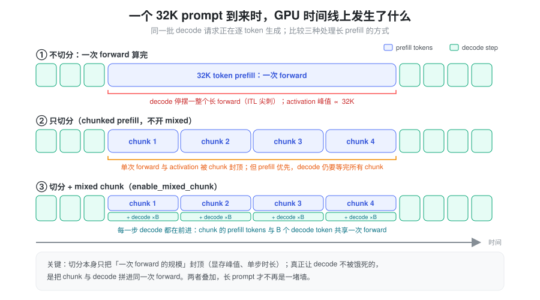
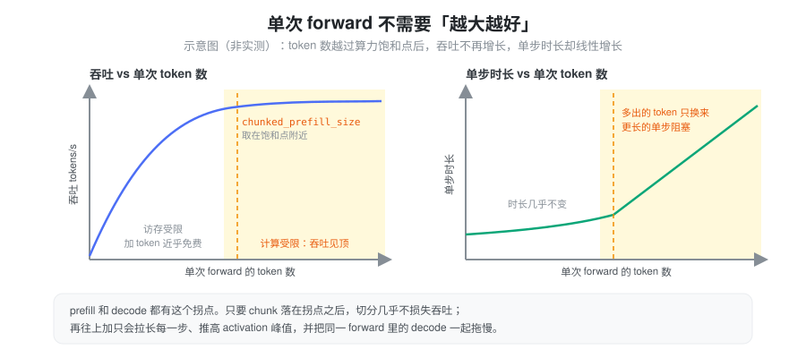
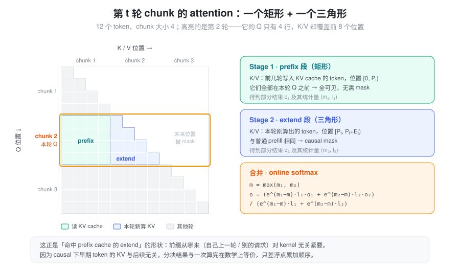
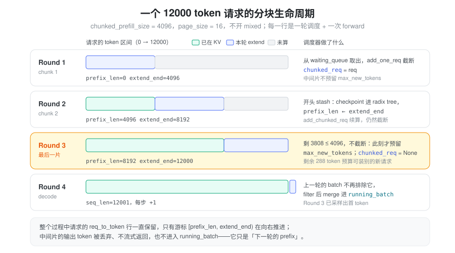

问题：长 prompt 的 prefill 是一堵墙
prefill 要把整个 prompt 一次送进模型、算出每一层的 KV，是计算密集的阶段。真实业务里 prompt 动辄 4K、32K 甚至更长，最直觉的做法是“一次 forward 全算完”。这么做有三个问题：
- 阻塞 decode。 一次 32K 的 forward 要跑很久，GPU 上正在逐 token 生成的请求在这段时间里一个 token 也出不来，表现为 ITL（token 间延迟）突然拉长、尾延迟失控。
- 显存峰值失控。 prefill 的 activation（MLP 中间层、logits 等）与本次 forward 的 token 数成正比，prompt 越长峰值越高（详见 运行时显存）。
- 收益递减。 单次 forward 的 token 数超过某个量级后，GPU 已经算力饱和，再多塞 token 吞吐也不会涨。

图里第 ② 行有一个容易被忽略的事实：只切分并不能让 decode 插进来。 SGLang 的调度是 prefill 优先，只要还有 chunk 没算完，下一轮仍然会组 prefill batch，decode 照样要等。切分本身解决的是第 2、3 个问题，也就是把单次 forward 的规模封顶；第 1 个问题要靠 mixed chunk（第 ③ 行）把 chunk 和 decode 拼进同一次 forward 才能解决。
关键观察：单次 forward 有一个“够用”的规模
切分之所以几乎不损失吞吐，是因为单次 forward 的效率存在饱和点：

- prefill：线性层的算术强度大致随 token 数增长。token 少时受访存限制，多塞 token 几乎“免费”；越过 roofline 的拐点后变成计算受限，吞吐见顶。以 FlashAttention 3 在 H200 上的定长测试为例，序列足够长时，继续增大 batch size 不会再提升 attention kernel 的 FLOPS，甚至会略有下降，只会推高 TTFT。
- 模型越大，饱和需要的 token 反而越少。 hidden size 越大，每个 token 的计算量越大，算术强度更早逼近上限。所以只要 chunk 取得合理，大模型上就足以吃满算力。
- decode 也一样：总 decode token 数增长到几百（经验上约 512）后同样进入 compute-bound，再加 batch 帮助不大。
结论是：prefill 和 decode
都不需要“越大越好”的计算单元。 把单次 forward 的
token
数封在饱和点附近，吞吐几乎不变，单步时长和显存峰值却都被控制住了。这个上限就是
chunked_prefill_size。
抽象：把一次 prefill 变成若干次可续算的 extend
切分在数学上是精确的，根本原因在于 causal attention：位置 i 的输出只依赖 \le i 的 token。所以第一片算完之后，它的 KV 就是最终值，不会被后面的 token 改写。后面每一片要做的，只是“带着已有前缀继续往后算”。
这正是 extend 的形状。命中 prefix cache 的请求也是“前缀已在 KV cache 中，只算剩下的部分”。从 kernel 的视角看，前缀是别的请求留下的，还是自己上一轮算的，没有任何区别。于是 chunked prefill 不需要新的 attention kernel，也不需要新的执行路径，只需要在请求上维护一个游标：
本轮计算区间 =
[prefix_len, extend_end)；算完后令prefix_len ← extend_end，下一轮继续。
设请求总长 N，chunked_prefill_size
为 C，共 \lceil N/C \rceil 轮。第 t 轮（t
= 0, 1, \dots）：
- 前缀长度 P_t = \min(tC, N)，extend 长度 E_t = \min(C, N - P_t)，本轮 seq_len S_t = P_t + E_t
- Query 只包含位置 [P_t, P_t + E_t)。extend 中第 i 个 token（全局位置 P_t + i）的输出为
o_i = \frac{\sum_{j=0}^{P_t + i} \exp(q_i \cdot k_j / \sqrt{d}) \cdot v_j}{\sum_{j=0}^{P_t + i} \exp(q_i \cdot k_j / \sqrt{d})}
其中 j \in [0, P_t) 的 k_j, v_j 来自 KV cache（前几轮已算好），j \in [P_t, P_t + i] 的来自本轮新算的 KV。这两段在 attention 矩阵上恰好是一个矩形加一个三角形：

o_i^{(1)} = \text{Attn}(q_i, K_{\text{prefix}}, V_{\text{prefix}}) \quad \text{(Stage 1：整段 prefix，无 mask)}
o_i^{(2)} = \text{CausalAttn}(q_i, K_{\text{extend}}[:i+1], V_{\text{extend}}[:i+1]) \quad \text{(Stage 2：extend 内 causal)}
两段各自带着 log-sum-exp 统计量 (m_1, l_1)、(m_2, l_2)，用 online softmax 合并：
m = \max(m_1, m_2), \quad o_i = \frac{e^{m_1 - m} \cdot l_1 \cdot o_i^{(1)} + e^{m_2 - m} \cdot l_2 \cdot o_i^{(2)}}{e^{m_1 - m} \cdot l_1 + e^{m_2 - m} \cdot l_2}
合并结果与一次算完在数学上等价，差别只在浮点累加顺序（这也是 推理非确定性 的来源之一）。
调度：同一时刻只有一个“半成品”
有了游标，调度器只需要再回答一个问题：谁来持有跨轮次的半成品请求？
SGLang 的答案很克制：每个调度进程最多只有一个半成品，记在
Scheduler.chunked_req 上。
为什么只要一个？因为一轮里能被截断的请求本来就最多一个：截断意味着这一轮的 chunk 预算已经用完，后面的请求根本排不进来。调度器每轮又优先续算已有的半成品，所以它总能尽快算完，不会出现一堆请求各算了一半、各自占着 KV 却都出不了首 token 的局面。
每一轮调度围绕这个半成品做四件事：
- stash：把上一轮算出的 KV 交给 prefix
cache
保管，并推进游标（
prefix_len ← extend_end）。 - 排除：上一轮的 prefill batch
中，已经算完 prefill 的请求合并进
running_batch开始 decode；半成品被排除在外，不进入 decode。 - 组新 batch：先给半成品续一片，再从 waiting queue 里按剩余预算装新请求；装不下的那个被截断，成为新的半成品。
- prefill 优先：组出了 prefill batch 就跑 prefill，否则才跑 decode。
组 batch 时由 PrefillAdder
同时管三份预算，任何一份耗尽就停止加请求：
| 预算 | 含义 | 来源 |
|---|---|---|
rem_total_tokens |
KV pool 剩余可用 slot（含可驱逐的 prefix cache），扣除 running 请求未来 decode 的预留 | memory_budget（PrefillBudget） |
rem_input_tokens |
本轮 prefill batch 的总输入 token 上限 | max_prefill_tokens，默认 16384 |
rem_chunk_tokens |
本轮 prefill 最多算多少 token，即 chunk 大小 | chunked_prefill_size |
还有一条与切分直接相关的规则：只有最后一片才预留
max_new_tokens 的 decode
空间，中间片的预留记为 0，避免过早占住
KV。但这条规则只管记账。新请求第一次被接纳时，准入检查仍会按“剩余全部
prompt +
max_new_tokens”判断装不装得下，保证接进来的请求最终能算完，而不是半路卡死。

Round 3 是关键的一轮：剩余 3808 token 已经不超过 chunk
大小，于是这一片不再截断，此时才预留 decode
空间，chunked_req 清空。这一轮剩下的 288 token
预算，还可以装进 waiting queue 里的其他短请求。
Mixed chunk：让 decode 搭上 chunk 的车
开启 --enable-mixed-chunk 后，组出的 prefill
batch 会和当前的 decode batch 合并成一次
forward（ForwardMode.MIXED），这正是第一张图第
③ 行的形态。chunk 是计算密集的，decode
是访存密集的，两者在同一次 forward 里正好互补（见 Batch 中的 mixed batch
一节）。
为了给 decode 腾位置，构造 PrefillAdder
时会把 running 请求数 running_bs（每个 decode
请求 1 个 token）从
rem_chunk_tokens、rem_input_tokens
和显存预算中预先扣掉。所以开了 mixed 之后，一片的实际大小是
chunked_prefill_size − running_bs。mixed
有前提条件：本轮不能要求 logprob、不能带
input_embeds、running batch 里不能有 beam
search，否则退回单独
prefill；部分投机解码算法也会在启动时把它关掉。即使条件满足，如果
prefill 接纳之后 KV 已经不够给 decode 行分配，这些 decode
行也只是本步缺席、下一步再 decode，不会因此被 retract。
另一个相关的新开关是
--prefill-decode-interval：每次 extend
之后强制插入 N 轮 decode，用“拉长 TTFT”换“decode
不断流”。它与 mixed 的思路不同，默认关闭，只对 Hopper 上
profiling 过的 Qwen3-VL 配置自动启用。
实现：代码落点与几个细节
以下路径均相对于 python/sglang/（本 fork
相对 upstream 改动较大，旧版的
is_chunked、cache_unfinished_req、prefix_indices、extend_input_len
已不在主路径上）。
| 概念 | 代码 |
|---|---|
| 半成品请求 | Scheduler.chunked_req，init_chunked_prefill()
初始化（srt/managers/scheduler.py） |
| 每轮 stash / 排除 / 合并 | Scheduler.get_next_batch_to_run()、stash_chunked_request() |
| 组 prefill batch | Scheduler._get_new_batch_prefill_raw() |
| 三份预算、续算、截断 | PrefillAdder.add_chunked_req() /
add_one_req() /
_select_prefill_admission()（srt/managers/schedule_policy.py） |
| 游标 | Req.prefix_len、Req.extend_end、Req.extend_len、Req.get_fill_ids()（srt/managers/schedule_batch.py） |
| KV 交给 prefix cache | checkpoint_kv_cache()（srt/mem_cache/common.py）→
RadixCache.checkpoint() |
| 与 decode 合并 | ScheduleBatch.mix_with_running() |
半成品的 KV 放在哪
请求的 req_to_token
行在各片之间一直保留，不会每片释放再重新申请。stash
时，checkpoint_kv_cache() 调用
tree_cache.checkpoint(req, up_to=req.extend_end)：把已算部分按
page 对齐插入 radix tree，用树里的 KV
索引改写这一行（与树中已有重复的 slot 会被释放），再把请求的
lock 挪到新的
last_node；不满一页的尾巴留在请求自己的行里，不进树。之后令
prefix_len = extend_end。
这样做有两个好处：半成品的 KV 被 lock
保护，不会在等下一片时被驱逐；共享同一前缀的其他请求也可以直接命中它。续算时，init_next_round_input()
是不带 tree_cache
调用的，只刷新
fill_ids、不重新做前缀匹配，游标从
prefix_len 直接接着走。
用计数器而不是布尔值标记“还在切”
“这个请求是否还没完成 prefill”由
Req.inflight_middle_chunks
表示：每次以中间片身份被调度时
+= 1（scheduler.py），中间片的结果处理完时
-= 1（scheduler_components/batch_result_processor.py），<= 0
才算完成 prefill。用计数器是为了适配 overlap
调度：下一轮在上一轮结果返回之前就已经开始组
batch，同一请求可能有不止一个中间片在路上。中间片采样出的
token 会被丢弃，也不流式返回；需要 input logprob
时则按片增量累积。
page 对齐只保证在第一刀
新请求第一次被截断时（_select_prefill_admission），会把绝对结束位置对齐到
page_size（以及可选的
truncation_align_size），保证进树的部分都是整页。续算走的是
add_chunked_req，片长取
min(rem_chunk_tokens, 剩余显存)，不再重新对齐。例如开了
mixed、扣掉 running_bs
之后，片长就未必是整页；这也是 checkpoint
要允许“尾巴留在行里”的原因。
参数
| 参数 | 默认 | 说明 |
|---|---|---|
--chunked-prefill-size |
按显存自动选 | <20GB 为 2048；<60GB 为
4096；<160GB（H100、H20、H200 等）为
8192；≥160GB（B200、MI300）为 16384；探测不到显存时为
4096（srt/arg_groups/memory_hook.py）。开 DP
attention 时再除以
attn_dp_size。-1
表示关闭切分，部分模型会被强制设为 -1 |
--max-prefill-tokens |
16384 | 一个 prefill batch 的总输入 token 上限 |
--enable-mixed-chunk |
False | chunk 与 decode 合并为一次 forward |
--enable-dynamic-chunking |
False | 仅 PP：按 profiling 拟合的耗时模型，随已有前缀长度动态调整片长，让各片耗时接近（前缀越长，同样的片越贵） |
PD 分离的 prefill 实例上，每算完一片，就把这一片的 KV
通过 send_kv_chunk 先发给 decode
实例，不必等整条 prompt 算完再传；具体见 PD 分离。
小结
Chunked prefill 的核心只有一句话：一个请求的
prefill，可以拆成若干次“前缀恰好是自己”的 extend。
causal attention 保证了拆分是精确的；prefix cache 和 extend
kernel 早已能处理“前缀在
cache、只算剩下部分”的情形，于是切分几乎不需要新机制，只需要一个
[prefix_len, extend_end)
游标，加上调度器里“至多一个半成品、优先续算、最后一片才预留
decode 空间”的规则。它把单次 forward
的规模封在算力饱和点附近，吞吐几乎不变，显存峰值和单步时长却有了上限；再叠加
mixed chunk，让 decode 搭上每一片的车，长 prompt
才真正不再阻塞正在生成的请求。